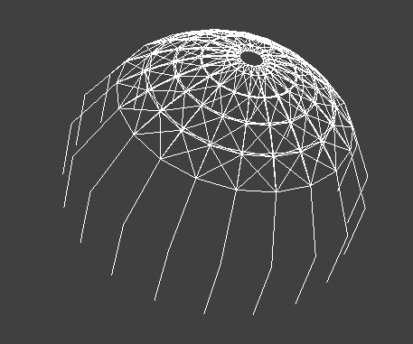
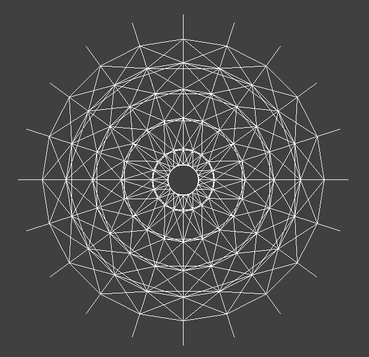
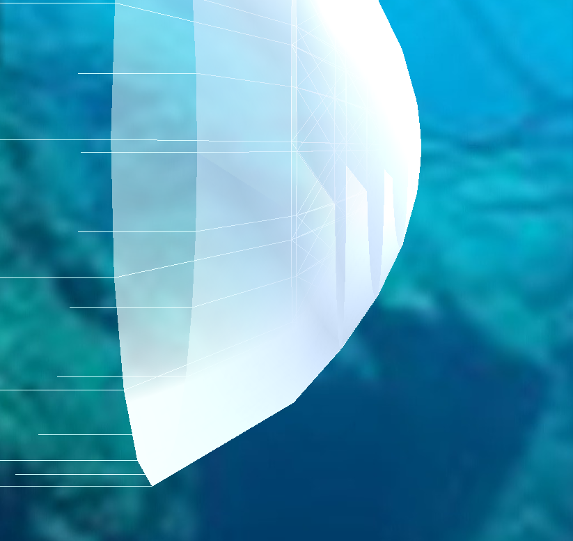
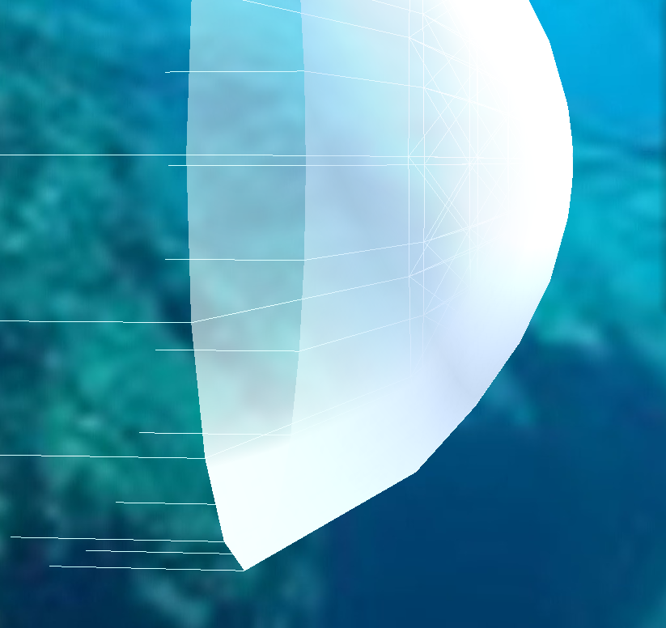
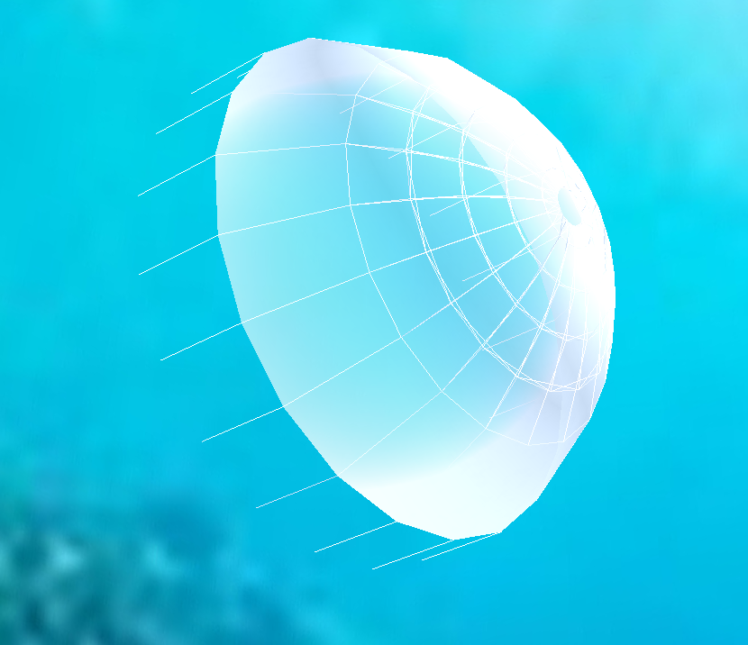

Abstract: Our project is to render an animated simulation of jellyfish movement in water based on ClothSim infrastructure (1). For our jellyfish cloth, we wrote a translucency shader featuring silhouette enhancement. Through triangle sorting and interpolated alpha blending, we achieved a semi-transparent jellyfish through which the ocean background is visible. For the jellyfish model, we created a spring-mass frame consisting of point masses and structural, shearing, and bending springs. Force vectors on the spring-mass model simulate jellyfish muscle contraction and modified gravitational forces simulate water buoyancy.
Creating a Shader: The first component of our shader was adding translucency to the existing Phong shader
from ClothSim (3). Our implementation for translucency, based on the GLSL translucency tutorial, has two components:
diffuse and forward-scattered translucency. Diffuse translucency is similar to the diffuse term of regular Phong
shading, but instead we use the negative surface normal vector to cast light "through" a surface and out the other
side. Forward-scattered translucency is similar to the specular reflection of regular Phong shading, but we replace
the reflected light direction with the negative light direction and slightly "blur" the light by incorporating a
sharpness parameter.
Next, we enabled alpha blending and changed the alpha channel of the shader to make the texture semi-transparent (4).
We used interpolated alpha blending, which interpolates between two overlapping fragments and displays the resultant color.
To resolve ordering issues, we sorted the triangles by z-position in projection space, described in detail in the Discussion section.
Creating a Wireframe: We based the frame shape of our jellyfish off of the diagrams from Rudolf/Mould (2).
We modified the existing ClothSim code to render a circular shape rather than a rectangular shape. We changed
buildGrid() so that the point masses are initialized in a circle in the x-y plane and parabolic
with respect to the z-axis (1). Each ring of the jellyfish uniformly has 20 point masses. We used polar coordinates
to initialize the x-y positions. We used structural springs along the rings of the jellyfish as well as vertically
between the rings. We then added shearing and bending springs similarly to how we implemented them for the ClothSim
project (1). For the tentacles, we used only vertical structural springs.
Simulating Jellyfish Movement with Forces: The forces applied on the jellyfish are cyclic contractions such
that jellyfish switch from contracting to releasing. In Rudolf/Mould, the jellyfish is placed in fluid particles
to simulate underwater incompressibility conditions (2). Since this was out-of-scope for our project, we approximated
these physical forces instead by using relative comparison. We modified parameters of the Cloth object so that every
4000 calls to simulate(), the cloth would switch contraction directions.
All of the external force vectors are directed slightly above the center of the top ring of the wireframe, so that
the force vector has a radial component for contracting and a vertical component to simulate a buoyant force. If the
jellyfish is currently releasing, then the force vector is multiplied by -1. Every ring layer has a different magnitude
of external force depending on its depth. The top ring layers have a smaller magnitude than the lower rings. We
linearly interpolated the force magnitudes to be the height index divided by 4. From watching videos of jellyfish
movement and reading the Rudolf/Mould paper, we intuitively saw that the bottomost ring would have a much larger
force (2). After experimenting with different values, we set the force magnitude of this layer to be 10. We
additionally changed gravity to be 0.2 in the vertical direction, so that the jellyfish would appear to be floating.
For the rest of our forces, we used the same spring forces and Verlet integration from Project 4 to give the jellyfish
basic cloth structure and movement.
Improving Our Model: We made additional changes to the jellyfish model by modifying the shape of the cap
so that it was more bell-shaped. We changed the z value of the bottom ring to be much lower. This also allowed
the last ring to be more flexible as it was not as tightly connected to the other rings and springs.
We also improved shading at the tentacles by creating individual lines for the tentacles by superimposing the
wires used in structural springs onto the triangle representation of the jellyfish cap. No forces were applied
on the tentacles to simulate the flimsiness of jellyfish tentacles.
As a final improvement to the shader, we implemented silhouette enhancement to create the effect of increased opacity
at the edges of the jellyfish.
As for the background, we implemented a skybox shader using the GLSL Cubemap tutorial (5). The ClothSim codebase
included code to load the cubemap from six texture files but only supported the sampling via Mirror shader. In
order to extend the cubemap support to a skybox, we created new vertex and fragment files for the skybox shader
and generated points to create a humongous box that would surround the jellyfish model. Using these, we bound the
loaded texture and passed in the view/projection parameters to the shader to shade the inside of the large cube.
With this, we replaced the texture files with cubemap images generated from an equirectangular source image to
create a 3D underwater background.
|

final jellyfish wireframe |

final jellyfish wireframe top |
|

interpolated alpha blending (ordering artifacts) |

interpolated alpha blending with triangle sorting |
Jellyfish mesh:
We struggled to create separate tentacles because ClothSim assumes that the cloth is modeled as one continuous rectangle.
We ultimately excluded the triangles filled in among the tentacles from rendering to create a jellyfish with a textured cap
and wireframe tentacles.
Transparency:
Correctly rendering the transparency of the jellyfish ended up being a much more involved problem than expected.
With our custom shader alone, we saw a plethora of visual artifacts, some of which were resolved by specifying
a blend function/parameters and disabling backface culling. The ordering artifacts were the hardest to address,
only disappearing once we implemented triangle sorting.
Triangle sorting:
To implement triangle sorting, the most crucial realization was that we had to convert to projection coordinates
before sorting by z depth. We researched the OpenGL pipeline and the various transformations applied from model
to screen, eventually determining that we needed to somehow find the view and projection matrices to take the triangle
vertices from model space to projection space.
After digging through the ClothSim code, we eventually found two functions returning these two matrices inclothSimulator.cpp,
which finally enabled us to perform depth sorting on our triangle list and fix the last few translucency artifacts.
Key takeaways:
For one, we learned about the nuances and difficulties of simulating objects as mass spring models. We had to make
many modifications to the structure of the model and the external forces on our springs to simulate organic movement.
While implementing triangle sorting, the information we gained on the OpenGL pipeline and the coordinate transformations
involved (6) allowed us to bridge the conceptual “gap” between the HalfEdge mesh encoded in ClothSim and the vertices/fragments
rendered by OpenGL, which was a rewarding realization.
We were also forced to recognize the importance of keeping track of which coordinate space we are working in and how to
move between spaces, as certain operations (like depth sorting) only make sense in specific coordinate spaces.
|

image of jellyfish in the ocean |
|
video of jellyfish swimming |
Lindsey worked on the spring model and creating the wireframe tentacle part of the shader. She also worked on preliminary implementations of triangle sorting. Rio worked on creating the point mass and spring model and modeling the initial shape of the jellyfish. He also added the background using cube mapping. Emily worked on creating the the point mass and spring model and added cyclic forces for jellyfish contraction and floating. Simon worked on implementing the translucency shader and alpha blending. He also worked on the final implementation for triangle sorting.